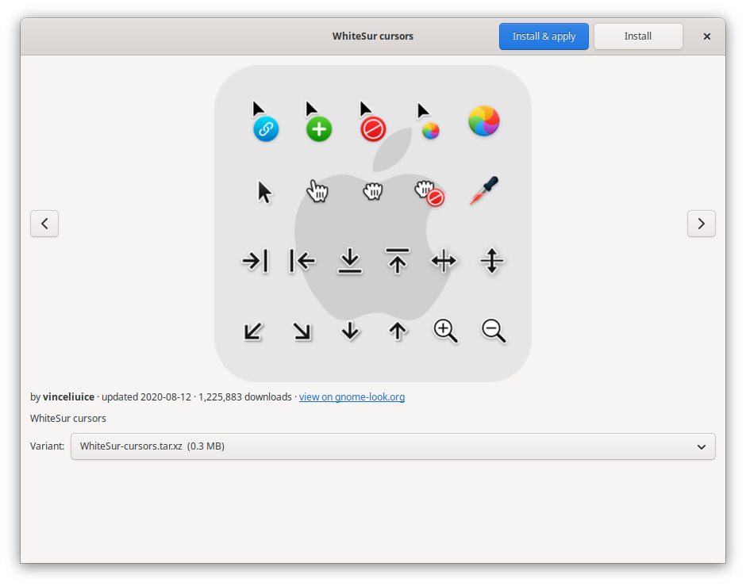

Theme your Linux desktop one piece at a time.
Icons, cursors, themes and wallpapers from gnome-look.org. One click to install, one click to apply. No archives, no hidden folders.

Mix and match, the way theming should work
Most theme tools only hand you whole theme packages. drape gives every part of your desktop its own catalog, so you can pair Papirus icons with Bibata cursors and a mountain wallpaper without touching a terminal.
Knows what's in the box
Downloads are unpacked, including archives inside archives, and each folder is identified by its contents, not by the category someone uploaded it to.
Puts it in the right place
Icons, cursors, themes and wallpapers each land where your desktop looks for them. Wallpapers also show up in Backgrounds settings.
Applies in one click
Sets the right setting for Cinnamon or GNOME. Packs with Dark, Light or Compact variants let you pick one from a menu.
Removes cleanly
Every install is tracked, so Remove deletes exactly what drape added, and Check for updates knows what's new.
Works with gnome-look.org
Prefer browsing the website? Its Install buttons open straight in drape.
Boot to login, themed
Plymouth boot splashes and login screen themes install with one password prompt. Theme for a login screen you don't have? drape offers to set it up.
Careful with your files
Downloads are checksum-verified, archives can't write outside their folder, and drape asks before replacing a theme it didn't install.
Before and after
What it takes to install one cursor theme from gnome-look.org.
| Step | By hand | With drape |
|---|---|---|
| Find it | Browse the site, pick among several downloads | Open Cursors, pick one |
| Install it | Download, extract, figure out which folder is the theme, copy it to ~/.icons | Click Install & apply |
| Use it | Open settings, find the right dropdown | Already done |
| Remove it | Remember where you put it, delete the right folder | Click Remove |
Screenshots
drape uses your own GTK theme, so it always matches the look you've picked.



Install
Needs Python 3.12+, GTK 3 with PyGObject, and python3-requests. Cinnamon and GNOME desktops already have all three. No root required.
Get it
git clone https://github.com/anolis/drape
cd drape
./install.sh
# adds drape to your menu and handles
# gnome-look.org Install buttonsUninstall with ./install.sh --uninstall. Themes you installed stay put.
Or use the command line
drape search icons papirus
drape install 1166289 --apply
drape list
drape remove 1166289
drape updates